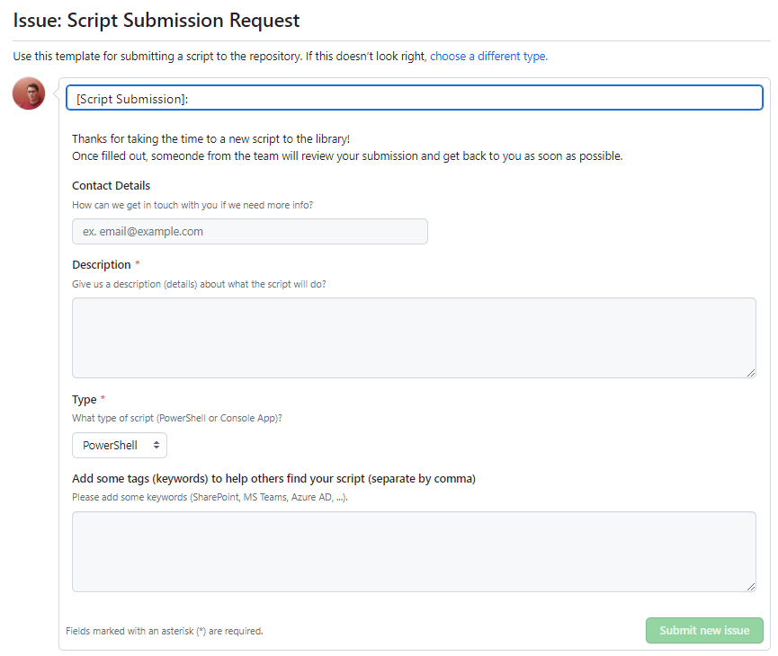

Submission guidelines
Do you have a possible interesting and reusable script, then this page is for you. There are two options to submit:
- Using a Pull Request (technical)
- Using a GitHub Issue
Submitting a Pull Request
- The first step when submitting a new script, is to pull the code to your local machine (
git clone https://github.com/dlw-digitalworkplace/dw-script-lib.git). - Create a new branch that starts from the
mainbranch and use the following naming convention:submission/[name-of-script] - Create a new folder in the
PowerShellorConsoleAppsfolder (depending on what you are submitting). Give the folder a clear name (e.g. Add-UserToGroup, Update-SharePointListColumn, ...) - Copy the content
Example.mdfile from the/Templatesto your new folder. (The templates folder contains an example structure of how your scripts folder should look like) - Add the PowerShell script or Console app code to the same folder. Make sure the PS filename is the same as the
.mdfile - Update the
.mdfile with all the needed details - Update the
toc.ymlfile in thePowerShellorConsoleAppsfolder and include your new script. - Navigate to GitHub and create a new pull request into the main branch. Select either the 'New PowerShell Script' or 'New Console Application' template and fill in all the details
- Wait for approval 🎉
Creating a GitHub Issue
- Navigate to the GitHub repo
- Go to "Issues" and create a new one
- Select the 'Script Submission Request' template
- Fill in all the template details.
- Someone from the
dw-script-libteam will contact you 🎉
